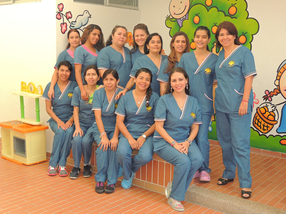
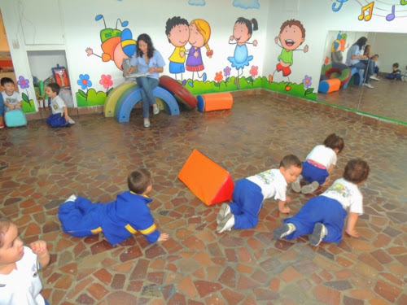
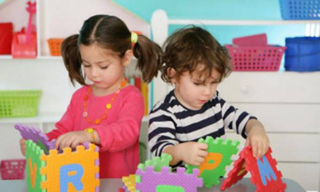
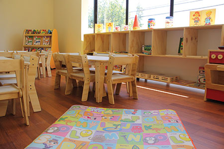

Nosotros

Nuestro equipo
Contamos con un grupo de docentes con formación pedagógica en educación preescolar
y con alto sentido de compromiso, carisma,
respeto y un profundo amor por su misión
formadora. En la cotidianidad, sus acciones y
lenguajes son propositivos, creando así una
atmósfera permanente de calidez y armonía.

Misión
Proporcionar a los niños desde los siete meses
hasta los 5 años gratas y enriquecedoras
experiencias que lo lleven a disfrutar de una
infancia feliz y recordar su paso por
nuestro jardín CIEMPIÉS como una etapa inolvidable de
sus vidas. A su vez cimentar las bases de su
crecimiento personal e intelectual imprimiendo
un sello característico y una huella indeleble
basada en los principios, seguridad,
independencia, organización, disciplina y
responsabilidad, garantizando un ingreso
exitoso al sistema escolar

Visión
Mantener e incrementar el reconocimiento
como uno de los mejores Jardines infantiles
altamente acreditado ante la comunidad
educativa, que busca inculcar en los niños
valores, responsabilidad, optimismo,
conocimientos y pasión por lograr sus
objetivos a través de la vida, proyectándolos al
futuro como agentes activos, reflexivos y
positivos para nuestra sociedad.

Infraestructura
Nuestro jardín cuenta con una moderna
infraestructura que permite un óptimo
desarrollo de nuestros niños, con salas
grandes, temperadas e iluminadas, sala de
lectura, sala de Investigación y Desarrollo y
otras instalaciones que te invitamos a conocer.
Seguridad: Nuestro jardin cumple con
todas las normas gubernamentales exigidas,
tales como corte automático de suministro de
energía, extintores, salida de escape y un personal altamente capacitado
y entrenado para enfrentar cualquier situación.